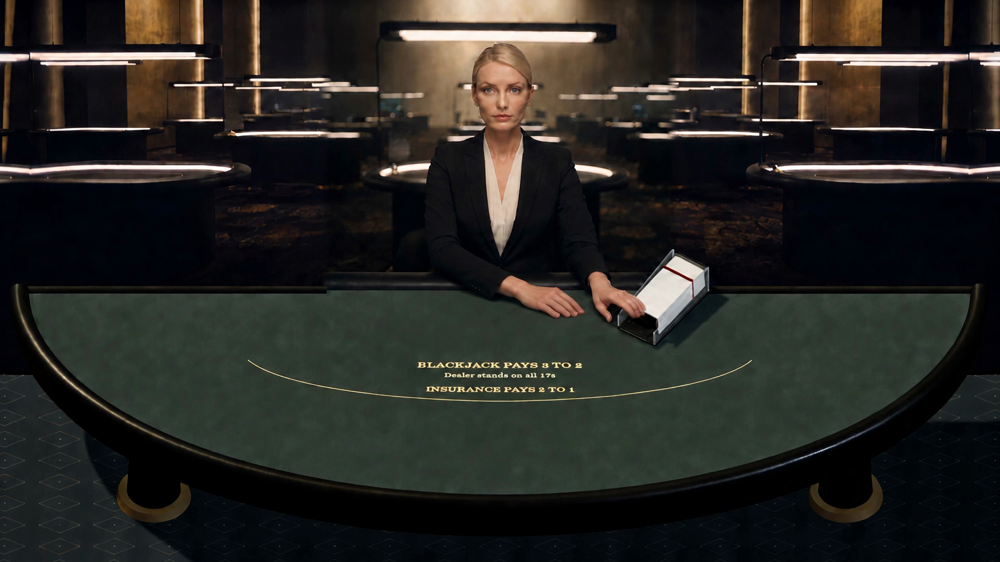
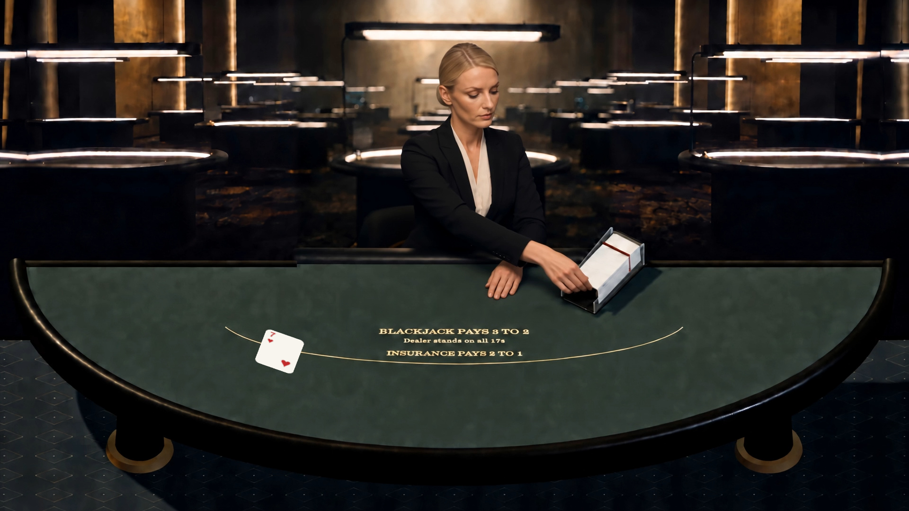

Astrid · Original winning references
These are the exact two images used in your selected Seedance clip 9dc93653.

Original start · Facing forward, hands beside the shoe. Download original

Original end · Looking down, body turned, hand reaching toward the shoe. Download original